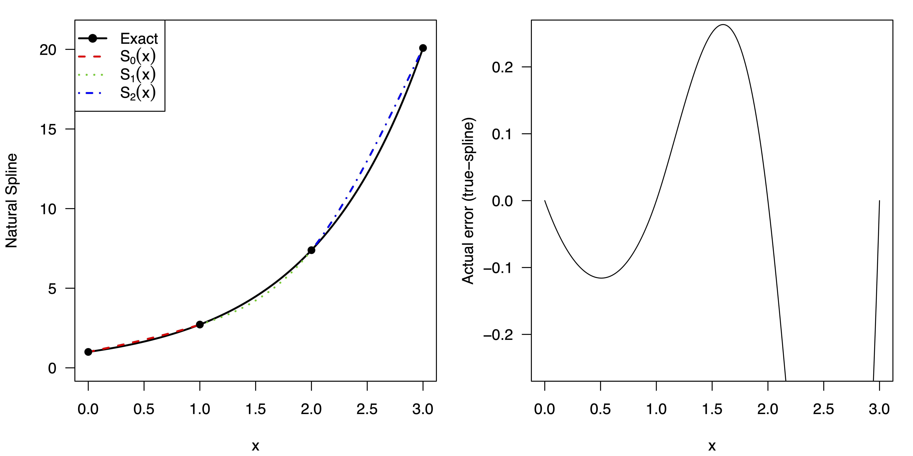
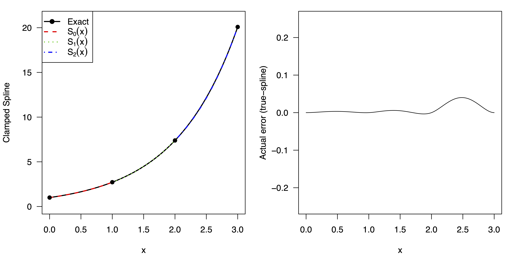

Section 3.2 Cubic spline interpolation
Before you begin, please note that there is a typo in the clamped spline example in the book (Example 2, page 148, eighth edition), the correct solution will be given below.
When computing a cubic spline with \(n+1\) grid points, keep in mind that we have \(n\) intervals, \(n\) spline segments, and an \((n+1)\times (n+1)\) matrix. For example, if the data is known at the grid points \(x_0, x_1, x_2, x_3, x_4\) we have \(5\) points, \(4\) intervals, \(4\) spline segments, and a \(5\times5\) matrix. The spacings between grid points, defined \(h_j
= x_{j+1} - x_j\text{,}\) are used below.
We can verify the conditions of the spline by definition, but ultimately the way to implement this, even for small datasets, is to use matrix algebra. Let’s use the vector \(\mathbf{r}\) (as in \(\textbf{A}\textbf{x} = \textbf{r}\text{,}\) rather than \(\textbf{A}\textbf{x} = \textbf{b}\)) for the right-hand side to avoid likely confusion between entries of the right-hand side vector and the coefficients \(b_j\) of the splines. The first and last rows of \(\mathbf{A}\) and \(\mathbf{r}\) depend on the choice of boundary conditions, but the interior rows are illustrated below. On the interior rows of the main diagonal, \(\mathbf{A}\) has entries
\begin{equation*}
2(h_0+h_1), 2(h_1 + h_2), \cdots, 2(h_{n-3} + h_{n-2}),
2(h_{n-2} + h_{n-1})
\end{equation*}
On the interior rows of the sub-diagonal (below main), \(\mathbf{A}\) has entries
\begin{equation*}
h_0, h_1, \cdots,
h_{n-3}, h_{n-2}
\end{equation*}
On the interior rows of the super-diagonal (above main), \(\mathbf{A}\) has entries
\begin{equation*}
h_1, h_2, \cdots, h_{n-2},
h_{n-1}
\end{equation*}
\begin{equation*}
\begin{aligned}
\mathbf{A} & =
\begin{bmatrix}
\cdot & \cdot & \cdot & \cdot & \cdot & \cdot &
\cdot & \cdot & \cdot &\cdot & \cdot \\
h_0 & 2(h_0+h_1) & h_1 & 0 & \cdot & \cdot &
\cdot& \cdot & \cdot &\cdot & 0\\
\cdot & \ddots & \ddots & \ddots & \cdot & \cdot
& \cdot & \cdot & \cdot &\cdot & \cdot \\
0 & \cdot & \cdot & 0 & h_{j-1} & 2(h_{j-1}+h_{j})
& h_{j} & 0 & \cdot & \cdot & 0\\
\cdot & \cdot & \cdot & \cdot & \cdot & \cdot &
\cdot & \cdot & \cdot &\cdot & \cdot \\
0 & \cdot & \cdot & \cdot& \cdot & \cdot &\cdot
& 0 & h_{n-2} & 2(h_{n-2}+h_{n-1}) & h_{n-1}\\
\cdot & \cdot & \cdot & \cdot & \cdot & \cdot &
\cdot & \cdot & \cdot &\cdot & \cdot \\
\end{bmatrix}\\
\mathbf{x} & =
\left[\begin{array}{c}
c_0 \\
c_1 \\
\vdots \\
c_{n-1} \\
c_n \\
\end{array}\right]\\
\mathbf{r} & =
\left[\begin{array}{c}
\cdots \\
3\left(\dfrac{a_2-a_1}{h_1} - \dfrac{a_1-a_0}{h_0}\right) \\
\vdots \\
3\left(\dfrac{a_n-a_{n-1}}{h_{n-1}} -
\dfrac{a_{n-1}-a_{n-2}}{h_{n-2}}\right) \\
\cdots \\
\end{array}\right]\end{aligned}
\end{equation*}
The interior rows of \(\mathbf{A}\) are as described above, but the first row begins with \(1, 0, \dots\) and the last row ends with \(\dots, 0, 1\text{.}\) To satisfy the boundary condition, the first and last rows of of \(\mathbf{r}\) are exactly \(0\text{.}\)
\begin{equation*}
\begin{aligned}
\mathbf{A} & =
\begin{bmatrix}
1 & 0 & \cdot & \cdot & \cdot & \cdot & \cdot
& \cdot & \cdot &\cdot & \cdot \\
\cdot & \cdot & \cdot & \cdot & \cdot & \cdot &
\cdot & \cdot & \cdot &\cdot & \cdot \\
\vdots & \vdots & \vdots & \vdots & \vdots & \vdots
& \vdots & \vdots & \vdots &\vdots & \vdots \\
\cdot & \cdot & \cdot & \cdot & \cdot & \cdot &
\cdot & \cdot & \cdot &\cdot & \cdot \\
\cdot & \cdot & \cdot & \cdot & \cdot & \cdot &
\cdot & \cdot & \cdot &0 & 1 \\
\end{bmatrix}\\
\mathbf{r} & =
\left[\begin{array}{c}
0 \\
\vdots \\
\vdots \\
\vdots\\
0 \\
\end{array}\right]\end{aligned}
\end{equation*}
The interior rows of \(\mathbf{A}\) are as described above, but the first row begins with \(2h_0, h_0, 0,
\dots\) and the last row ends with \(\dots, 0, h_{n-1}, 2h_{n-1}\text{.}\) To satisfy the boundary condition, the first and last rows of of \(\mathbf{r}\) are exactly \(3\left(\dfrac{a_1-a_0}{h_0}
-f'(a)\right)\) and \(3\left(f'(b) -
\dfrac{a_n-a_{n-1}}{h_{n-1}}\right)\text{,}\) respectively.
\begin{equation*}
\begin{aligned}
\mathbf{A} & = %\setcounter{MaxMatrixCols}{20}
\begin{bmatrix}
2h_0 & h_0 & 0 &\cdot & \cdot & \cdot &\cdot
& 0 \\
\cdot & \ddots & \ddots & \ddots & \cdots & \cdots
&\cdots & \vdots \\
%\vdots & \ddots & \vdots & \vdots & \vdots & \vdots
%&\vdots & \vdots \\
\vdots & \cdots & \cdots & \cdots & \ddots & \ddots
&\ddots & \cdot \\
\cdot & \cdots & \cdot & \cdot & \cdot & 0
&h_{n-1} & 2h_{n-1} \\
\end{bmatrix}\\
\mathbf{r} & =
\left[\begin{array}{c}
3\left(\dfrac{a_1-a_0}{h_0} -f'(a)\right) \\
\vdots \\
\vdots \\
\vdots\\
3\left(f'(b) - \dfrac{a_n-a_{n-1}}{h_{n-1}}\right) \\
\end{array}\right]\end{aligned}
\end{equation*}
Once the \(c_j\)’s have been solved, the \(b_j\)’s and \(d_j\)’s can be specified in reverse order from \(j=n-1,n-2,\dots,0\) (see Alg. 3.4 (Step 6) or Alg. 3.5 (Step 7)).
\begin{equation*}
\begin{aligned}
b_j & = \dfrac{a_{j+1} - a_j}{h_j} - \dfrac{h_j(c_{j+1} +
2c_j)}{3}\\
d_j & = \dfrac{c_{j+1} - c_j}{3h_j}\end{aligned}
\end{equation*}
Notice that \(c_n\) (from \(\mathbf{x}\)) is used in the calculation of \(d_{n-1}\text{,}\) but is never actually used in a spline. Regardless of the boundary condition, the calculated coefficients will appear in the spline of the form
\begin{equation*}
S(t) = \left\{\begin{alignedat}{2}
&\phantom{a_j + b_j(x-x_j) + } \cdots \phantom{(x-x_j)^2 +
d_j(x-x_j)^3}, &&\cdots\\
S_j(t) &= a_j + b_j(x-x_j) + c_j(x-x_j)^2 + d_j(x-x_j)^3, \quad
&&x_j\leq x < x_{j+1}\\
&\phantom{a_j + b_j(x-x_j) + } \cdots \phantom{(x-x_j)^2 +
d_j(x-x_j)^3}, &&\cdots\\
\end{alignedat}\right.
\end{equation*}
Note that \(x_0=a\) and \(x_n=b\text{.}\)
A natural spline: See Example 1 on page 143. Consider the data \(x_0 = 0, x_1=1, x_2, =2,
x_3=3\) and \(f(x) = e^x\text{.}\)
| \(j\) | \(a_j\) | \(b_j\) | \(c_j\) | \(d_j\) |
|---|---|---|---|---|
| 0 | 1.000000 | 1.465998 | 0.0000000 | 0.2522842 |
| 1 | 2.718282 | 2.222850 | 0.7568526 | 1.6910714 |
| 2 | 7.389056 | 8.809770 | 5.8300668 | -1.9433556 |

| \(j\) | \(a_j\) | \(b_j\) | \(c_j\) | \(d_j\) |
|---|---|---|---|---|
| 0 | 1.000000 | 1.000000 | 0.4446825 | 0.2735993 |
| 1 | 2.718282 | 2.710163 | 1.2654805 | 0.6951308 |
| 2 | 7.389056 | 7.326516 | 3.3508729 | 2.0190916 |
